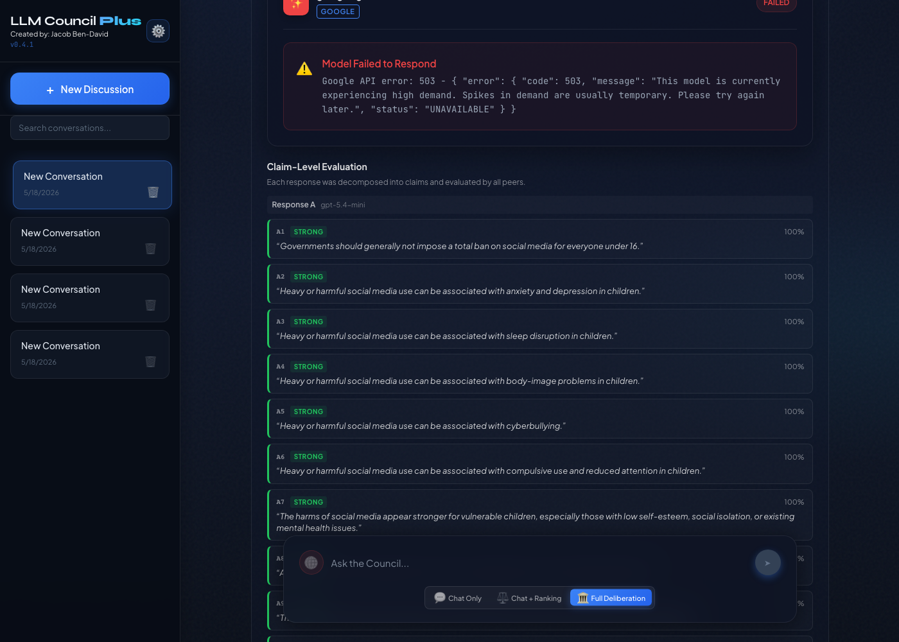
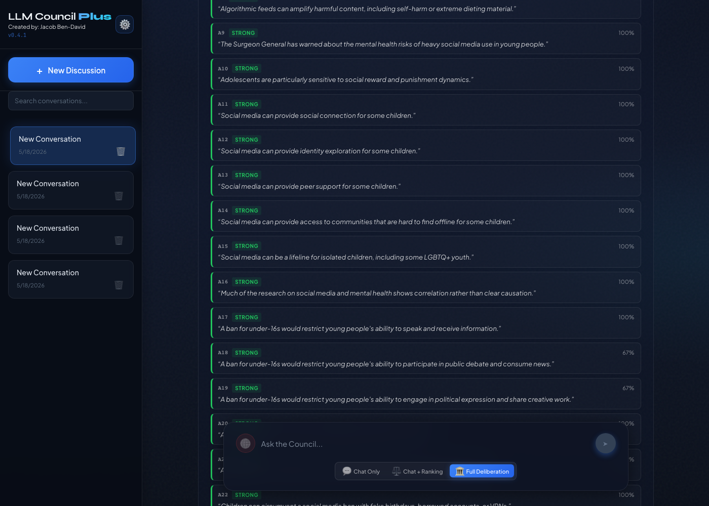
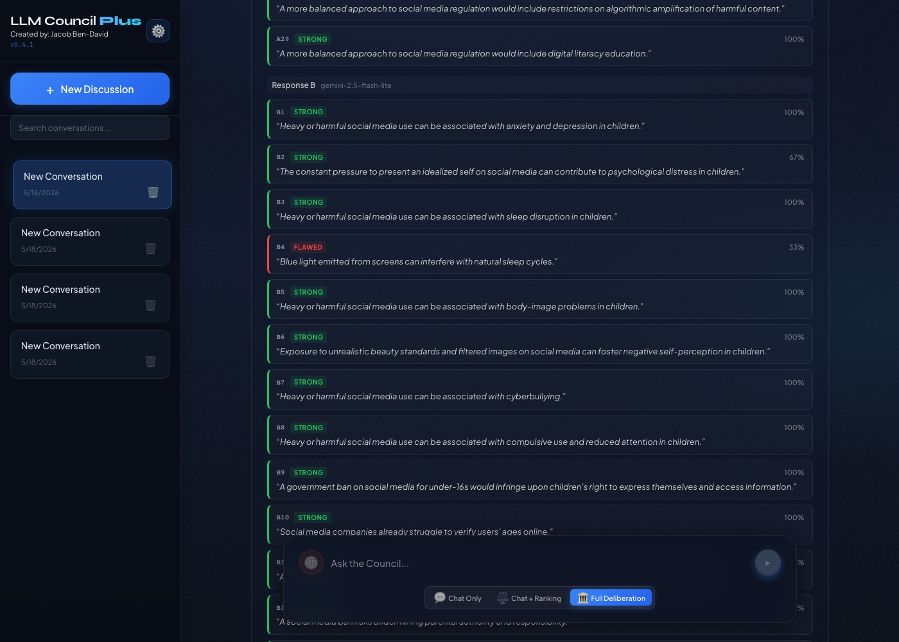
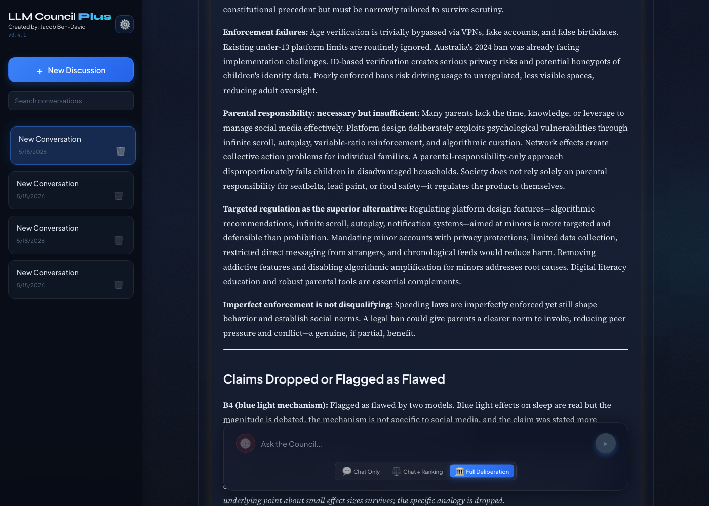
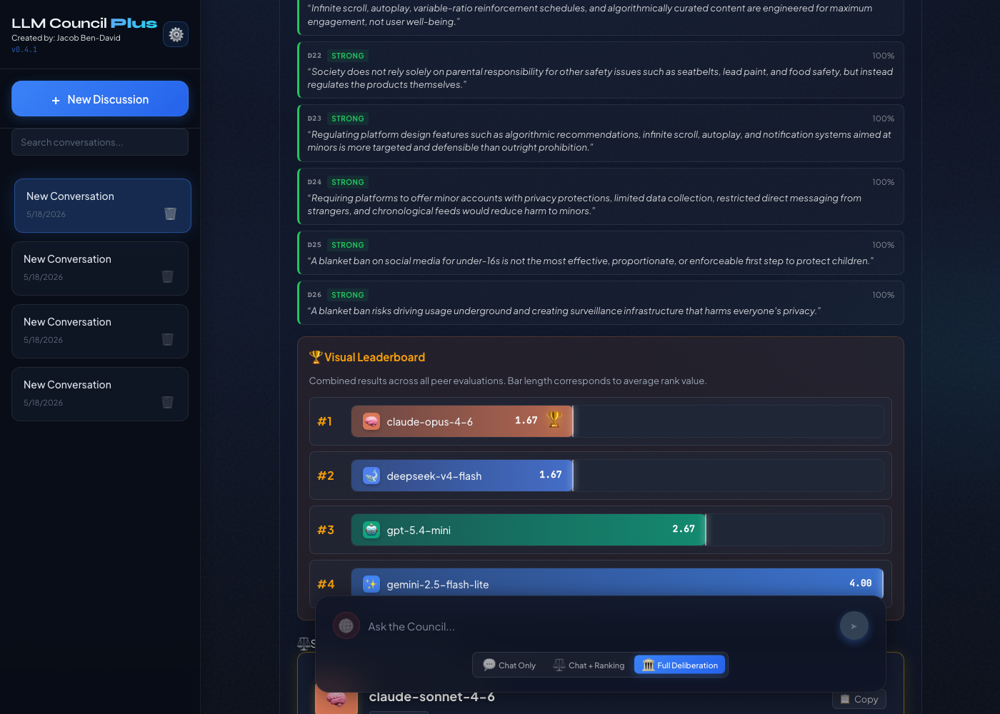
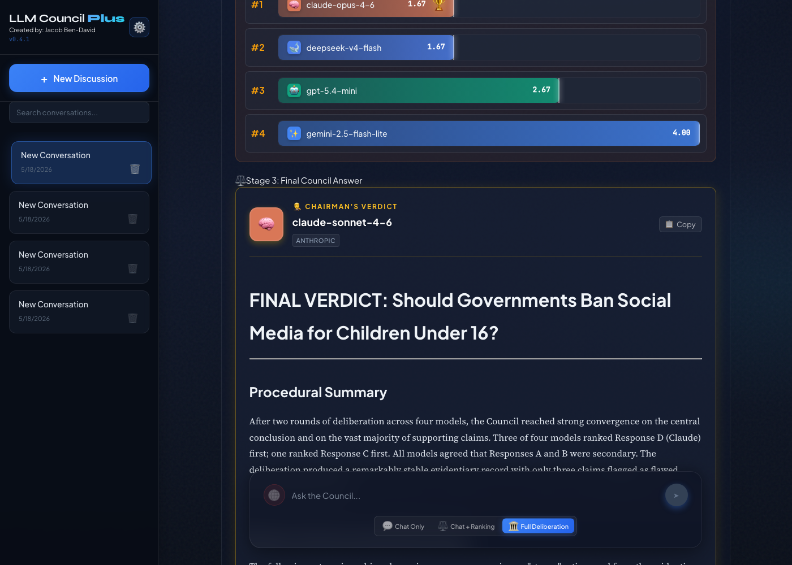

Phase 2 Evidence: Claim-Level Debate in Action
Live 2-round claim-mode debate: "Should governments ban social media for children under 16?" with 4 models. Captured 2026-05-18. PR: #11
1. Claim-Level Evaluation: ClaimCards in Action
After models respond, the chairman decomposes all responses into canonical claims. Peers then evaluate each claim as STRONG, WEAK, or FLAWED.



2. The Key Evidence: Claims Flagged and Dropped
In Round 2, models expanded their arguments (81 → 96 claims). Two new claims were peer-reviewed and flagged as FLAWED:
"Blue light emitted from screens can interfere with natural sleep cycles."
Peers found this too definitive. Blue light effects are real but debated, and the mechanism isn't specific to social media.
"Some effect sizes in social media studies are comparable to those associated with wearing glasses."
The glasses analogy was flagged as misleading. It trivializes real correlations and isn't a standard epidemiological comparison.
The Chairman's Final Verdict Addresses Them Directly

3. Rankings and Chairman's Final Verdict


4. Round-over-Round: How Claims Evolved
| Round 1 | Round 2 | What Happened | |
|---|---|---|---|
| Total Claims | 81 | 96 | Models added 15 new claims after getting peer feedback |
| STRONG | 81 (100%) | 94 (98%) | 94 claims survived peer scrutiny |
| FLAWED | 0 | 2 | B4 and D7 caught by peers, dropped by chairman |
This shows the system working as designed: more claims are generated as models elaborate, peer review catches weak ones, and the chairman drops them from the final synthesis.
5. Settings: Three Critique Modes


6. How It Works
7. Tests: 49 Passing ALL PASS
| File | Tests | Covers |
|---|---|---|
test_debate.py | 23 | convergence, paragraph segmentation, claim aggregation, cross-pollination |
test_debate_integration.py | 8 | multi-round orchestration, convergence, prompt override |
test_json_repair.py | 8 | JSON extraction, repair, edge cases |
test_settings_backup.py | 10 | export, import, reset, auth |
8. Files Changed (13 files, +1,191 lines)
| File | What |
|---|---|
backend/debate.py | Orchestrator: claim extraction, aggregation, cross-pollination, per-model prompts |
backend/json_repair.py | NEW JSON extraction and repair for LLM output |
backend/prompts.py | 7 new prompt templates (claim/paragraph Stage 1, 2, 3) |
backend/council.py | per_model_messages, Stage 2 prompt_override |
backend/main.py | Claim data in top-level metadata, paragraph/claim validation |
frontend/.../ClaimCards.jsx | NEW Claim card UI with expandable per-evaluator verdicts |
frontend/.../Stage2.jsx | Renders ClaimCards when claim data present |
frontend/.../CouncilConfig.jsx | Critique mode radio buttons |
9. The Final Document: Chairman's Complete Verdict
The full 10,000-character synthesis produced by the chairman after 2 rounds of claim-level debate. Note the structured sections addressing claim survival, claim evolution, and cross-model adoption. Also available as final-verdict.md.
FINAL VERDICT: Should Governments Ban Social Media for Children Under 16?
Procedural Summary
After two rounds of deliberation across four models, the Council reached strong convergence on the central conclusion and on the vast majority of supporting claims. Three of four models ranked Response D (Claude) first; one ranked Response C first. The deliberation produced a remarkably stable evidentiary record with only three claims flagged as flawed across the entire corpus.
Claims That Survived Full Scrutiny
Mental health harms (real but correlational): Heavy or harmful social media use is consistently associated with anxiety, depression, sleep disruption, body-image problems, cyberbullying, and compulsive use. The Surgeon General's advisory, JAMA studies, and Twenge/Haidt all support these associations.
Critical evidentiary limitation: The evidence is predominantly correlational, not causal. Reverse causation is plausible. Effect sizes are debated in magnitude.
Benefits a ban would eliminate: Social connection, identity exploration, peer support. For LGBTQ+ youth in unsupportive environments and isolated adolescents, it can be a genuine lifeline.
Enforcement failures: Age verification is trivially bypassed. Australia's 2024 ban already facing implementation challenges. ID-based verification creates privacy risks.
Targeted regulation as superior alternative: Regulating platform design features (algorithmic recommendations, infinite scroll, autoplay) is more targeted and defensible than prohibition.
Claims Dropped or Flagged as Flawed
B4 (blue light mechanism): Flagged as flawed by two models. Blue light effects on sleep are real but the magnitude is debated, the mechanism is not specific to social media, and the claim was stated more definitively than the evidence warrants. Dropped from the verdict.
D7 (glasses/potatoes comparison): Flagged as flawed by two models. The specific comparison to wearing glasses or eating potatoes is contested, potentially misleading about cumulative effects, and rhetorically counterproductive. The specific analogy is dropped; the underlying point about small effect sizes survives.
B11/B12/C23 (black market framing, parental authority erosion): Rated "moderate" by at least one model. The concern about driving usage underground survives in measured form; the stronger framings are noted but not given full weight.
Claims Adopted Across Models
- D18 (imperfect enforcement is not disqualifying) adopted by all models
- D19 (network effects and collective action problems) adopted as key structural argument
- D20 (equity concerns about disadvantaged households) adopted for government intervention
- D22 (product regulation analogy: seatbelts, lead paint) adopted as compelling frame
- C22 (ban provides social norm for parents) adopted as genuine partial benefit
The Definitive Answer
Governments should not impose a blanket ban on social media for children under 16. The evidence supports robust, targeted government intervention, but prohibition is the wrong instrument.
A blanket ban fails on four grounds simultaneously:
- Disproportionate — harms not universal; benefits for isolated/LGBTQ+ youth are real
- Unenforceable without unacceptable costs — requires invasive ID verification creating privacy risks
- Serious free speech costs — restricts minors' access to political info, creative expression, community
- Less restrictive alternatives exist — platform design regulation addresses root causes
Winner
Response D (Claude Opus) ranked first by three of four models. Introduced the most analytically valuable claims (D18-D22), provided the strongest structural argument for why parental responsibility alone is insufficient, and reached the most precisely calibrated policy conclusion.